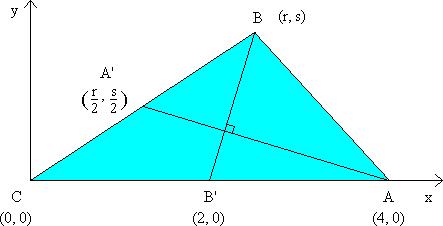

Solution to puzzle 100: Perpendicular medians
Suppose the medians AA' and BB' of triangle ABC intersect at right angles. If BC = 3 and AC = 4, what is the length of side AB?
A number of approaches to this problem are possible.
Geometric Solution
In the diagram below,  BCA =
BCA =  A'CB', and CA'/CB = CB'/CA = ½.
A'CB', and CA'/CB = CB'/CA = ½.
Hence triangles CAB and CB'A' are similar; and A'B' = ½BA.
Let AA' and BB' intersect at D.
Let A'D = x, B'D = y, AD = z, BD = w. Let AB = c, so that A'B' = ½c.
Applying Pythagoras' Theorem to each of the four right-angled triangles shown in the diagram:
| (1) | ||
| (2) | ||
| (3) | ||
| (4) |
Then (1) - (2) + (3) - (4)  0 = 5c2/4 - 25/4.
0 = 5c2/4 - 25/4.
Hence c2 = 5.
Therefore the length of side AB is  .
.
Vector Solution
Let C be the origin.
Let CA = a and CB = b.
We now determine vectors AA' and BB', and, as they are perpendicular, set their dot product equal to zero.
We have AA' = AC + CA' = ½b - a.
Similarly BB' = BC + CB' = ½a - b
AA' BB'  AA' . BB' = 0.
AA' . BB' = 0.
Hence (b - 2a).(a - 2b) = 0.
And so 5a.b - 2a2 - 2b2 = 0.
Since a = 4 and b = 3, we obtain 5a.b = 2(42 + 32) = 50.
Hence a.b = 10.
| Now, AB . AB | = (b - a).(b - a) |
| = b2 + a2 - 2a.b | |
| = 32 + 42 - 2×10 | |
| = 5. |
Therefore the length of side AB is  .
.
Geometric Solution using a Property of Medians
Let AA' and BB' intersect at D.
In this solution we use the well known result that the medians of a triangle intersect 2/3 of the way from the vertex to the midpoint of the opposite side.
We may therefore let A'D = x, DA = 2x; and B'D = y, DB = 2y.
Applying Pythagoras' Theorem to each of the three right-angled triangles shown in the diagram:
| (1) | ||
| (2) | ||
| (3) |
Then (1) + (2)  5x2 + 5y2 = 25/4.
5x2 + 5y2 = 25/4.
Substituting into (3), we obtain c2 = (4/5) × (25/4) = 5.
Therefore the length of side AB is  .
.
Cartesian Solution
Less elegant (though quite short!) is a Cartesian solution. We use the fact that the product of the gradients of perpendicular lines is equal to -1.
Let C be the origin. Let the coordinates of A be (4, 0), and those of B be (r, s). Note that the gradients of line segments AA' and BB' must have opposite signs, and hence r > 2.
The gradient of BB' = s/(r - 2).
The gradient of AA' = (s/2) / (r/2 - 4) = s/(r - 8).
AA' BB'  the product of the gradients of AA' and BB' equals -1.
the product of the gradients of AA' and BB' equals -1.
Hence s2/(r - 2)(r - 8) = -1.
Simplifying, we obtain s2 = -r2 + 10r - 16.
Since BC = 3, we also have r2 + s2 = 9, so that 10r - 16 = 9, and r = 5/2.
| Then AB2 | = s2 + (4 - r)2 |
| = s2 + r2 - 8r + 16 | |
| = 9 - 20 + 16 | |
| = 5. |
Therefore the length of side AB is  .
.
Source: A Survey of Classical and Modern Geometries (Exercise 1.69), by Arthur Baragar. With thanks to Paul M. Hether for bringing this puzzle to my attention, and to Michael Hemy for suggesting the first solution, above.